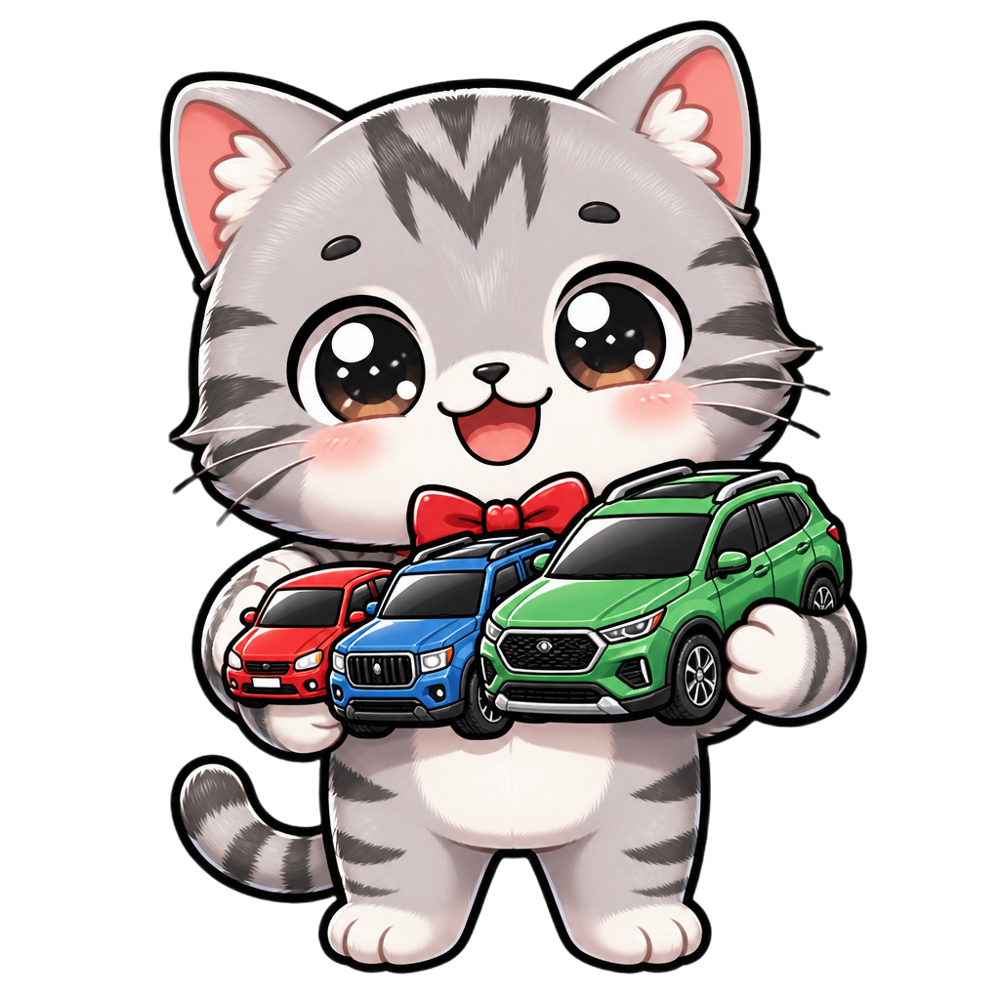
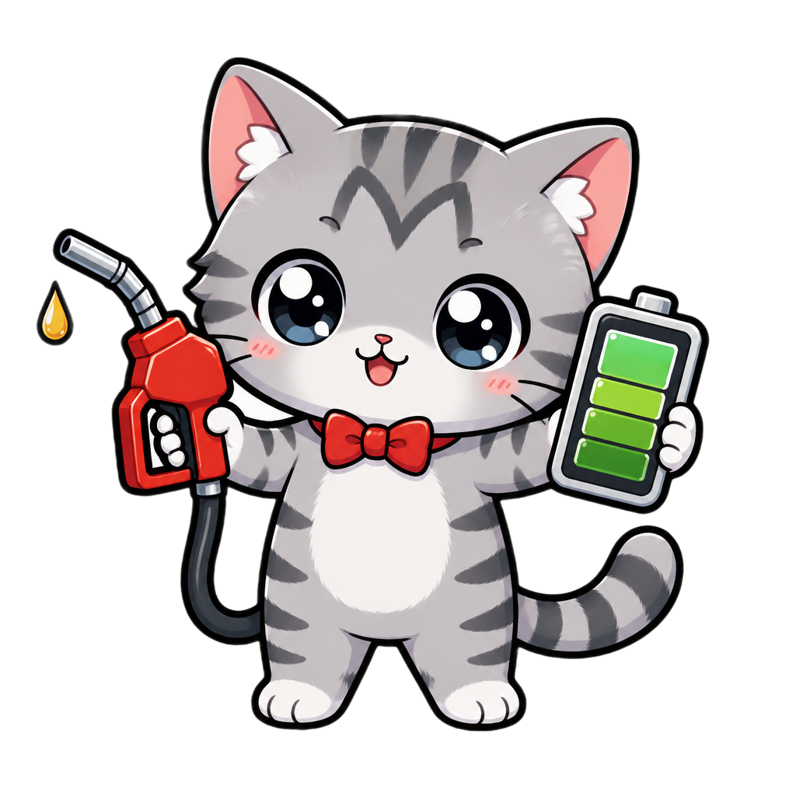

2026 購車比較完整解析
Toyota Yaris Cross
「老師說話，我來動手，順便把課變有趣。」
1 / 7
車型概覽 ①
三個等級怎麼選
Yaris Cross 在台灣常見三種配置
(a)
入門型（Entry）：基本配備，預算優先選擇
(b)
中階型（Mid）：CP 值最高、最熱銷的版本
(c)
頂級型（Top）：完整 TSS 主動安全、皮椅內裝
例
建議：如果預算允許，直上中階；要安全配備就選頂級

2 / 7
動力系統 ②
1.5L 自然進氣動力
和 Corolla Cross Hybrid 的關鍵差異
(a)
Yaris Cross：1.5L NA 自然進氣引擎
(b)
Corolla Cross：1.8L 油電混合 Hybrid
(c)
差別：油耗、稅金、保養成本與起步加速感
例
市區短距離通勤 → Yaris Cross 夠用；常跑長途 → Corolla Hybrid 較省

3 / 7
停車優勢 ③
尺寸小，市區好停
機械停車與路邊停車的關鍵指標
(a)
車長約 4.18 米，比 Corolla Cross 短一截
(b)
車寬 1.77 米，台灣機械停車格通用
(c)
迴轉半徑小，狹窄巷弄轉向更靈活
例
台北市區、機械車位、舊式公寓停車場 → Yaris Cross 更友善
4 / 7
安全配備 ④
TSS 主動安全亮點
Toyota Safety Sense 第三代
(a)
PCS 預警式防護：自動緊急煞車含路口偵測
(b)
DRCC 動態雷達巡航：高速跟車不費力
(c)
LTA 車道循跡輔助：長途減輕疲勞
(d)
BSM 盲點偵測：變換車道更安心（部分等級）
例
強烈建議至少選有完整 TSS 的等級
5 / 7
購買建議 ⑤
誰適合買 Yaris Cross？
三句話總結
(a)
預算 80-100 萬，要新車且首選 SUV 造型
(b)
市區為主，停車空間有限的家庭
(c)
對油電不在意，重視保養便利與保值
例
若年里程超過 2 萬公里、常跑高速 → 改看 Corolla Cross Hybrid
6 / 7
老師決定看哪台？
需要試駕清單或殺價策略嗎？
7 / 7
◀ 上一頁
⏸ 暫停
下一頁 ▶